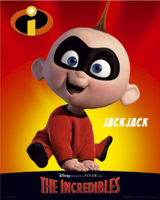

John Jackson "Jack-Jack" Parr is the Parrs' infant son, the youngest of the Parr children. Initially believed to be the only family member without any powers, he manifests a multitude of superhuman abilities at the end of the first film, most of which are types of shapeshifting. Although Edna Mode did not know what powers Jack-Jack might develop, she covered various possibilities by making him a fireproof and bulletproof blanket sleeper-like jumpsuit.